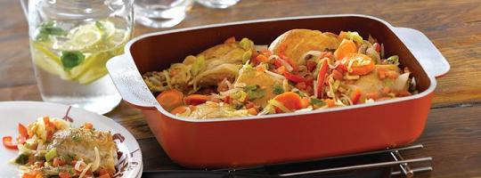

Beneficios
Las ollas Essen consumen 6 veces menos gas que un horno tradicional, y cocinan más rápido y con fuegos más bajos que las cacerolas comunes gracias a su cuerpo de aluminio que favorece la conductividad del calor. De hecho, hasta es posible cocinar sin fuego con las ollas Essen: en el caso del arroz, por ejemplo, usted simplemente deberá apagar el fuego una vez hervida el agua, dejando que la olla finalice su cocción sin necesidad de consumo de gas.
Otro de los beneficios de usar ollas Essen es que dadas sus características reemplazan el uso del horno obteniendo los mismos resultados en cocción y sabor. Nuestras ollas son tan versátiles que incluso reemplazan al baño María, a la freidora y la vaporiera.
Gracias a sus aros concéntricos en la base y sus barreras de distribución de líquido en la tapa, las ollas Essen permiten una distribución equitativa del calor. Asimismo, el cierre perfecto entre tapas y cacerola redunda en una menor pérdida de líquidos, dotando de un mayor gusto y sabor a sus alimentos, los cuales se cocinan en sus propios jugos. Por el motivo antes señalado, las comidas preparadas en ollas Essen no requieren de agregados de sal, grasas y condimentos.
El diseño y construcción de nuestras ollas está orientado a que sean fáciles de maniobrar, evitando accidentes. Por otro lado, los materiales de altísima calidad utilizados en los productos Essen los hacen más durables y resistentes. Otro elemento que favorece a seguridad y la duración del producto son las asas de aluminio que forman parte de la pieza y no se aflojan ni se rompen.